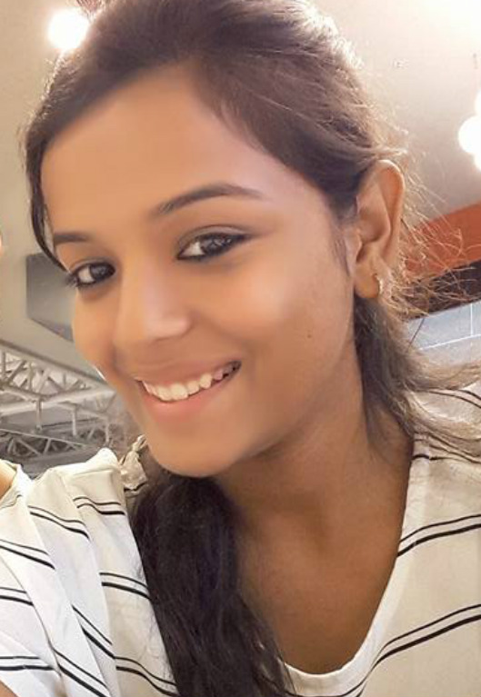
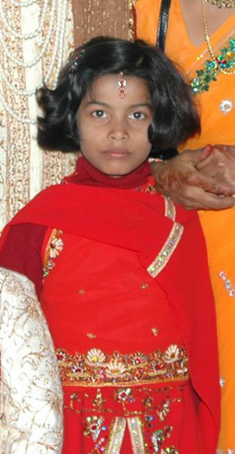
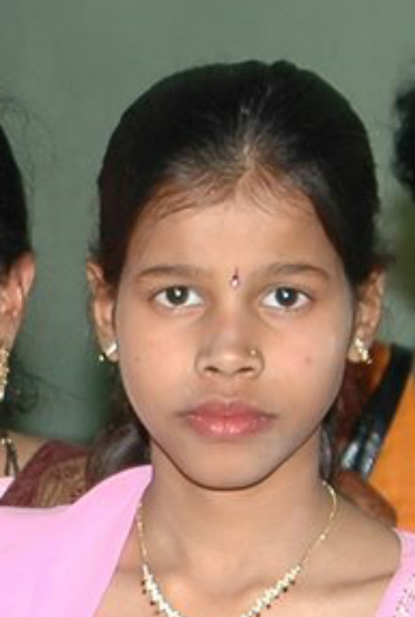

THESE ARE MY COUSINS:
My Favorite (dad's side)
My cousin (dad's side)
My cousin (dad's side)

My cousin sisters that lives in USA (mom's side)
My third favorite cousin brother that lives in th USA (mom's side)

My other favorite cousin (mom's side)
My cousin (mom's side)

My cousin (mom's side)
My cousin that work's in my dad's company(mom's side)
My cousin (mom's side)

My cousin (mom's side)
My cousin (mom's side)
My cousin (mom's side)